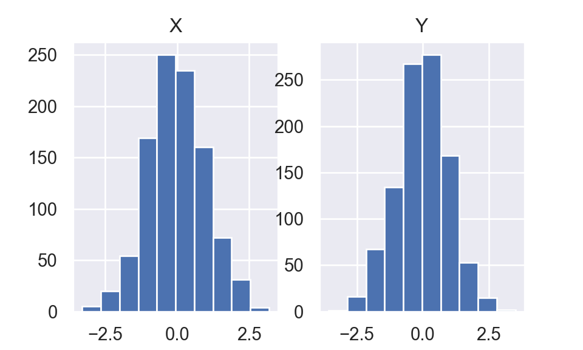

PythonBox-Muller Algorithm is a classic method to generate identical and independent standard normal random variables.
Box-Muller Algorithm
1. Generate \(U_1\sim\)uniform(0,1) and \(U_2\sim\)uniform(0,1) where \(U_1\perp U_2\)
2. Set \(R=\sqrt{-2\log(U_1)}\) and \(\theta = 2\pi U_2\)
3. Set \(X = R\cos(\theta)\) and \(Y = R\sin(\theta)\)
Overall,
\[\begin{array}{l} X=\sqrt{-2 \log U_{1}} \cos \left(2 \pi U_{2}\right) \\ Y=\sqrt{-2 \log U_{1}} \sin \left(2 \pi U_{2}\right) \end{array}\]
This can be verified by solving \(U_1\) and \(U_2\),
\[ \begin{array}{l} U_{1}=e^{-\left(X^{2}+Y^{2}\right) / 2} \\ U_{2}=\frac{1}{2 \pi} \arctan \left(\frac{X}{Y}\right) \end{array} \]
Jacobian matrix equals
\[ J(X,Y) = \begin{bmatrix} \frac{\partial U_1}{\partial X} & \frac{\partial U_1}{\partial Y}\\ \frac{\partial U_2}{\partial X} & \frac{\partial U_2}{\partial Y} \end{bmatrix} = \begin{bmatrix} -X e^{\frac{-(X^2+Y^2)}{2}} & -Y e^{\frac{-(X^2+Y^2)}{2}}\\ \frac{1}{2\pi} \frac{Y}{X^2 + Y^2} & \frac{1}{2\pi} \frac{-X}{X^2 + Y^2} \end{bmatrix} \]
Hence \[\det(J) = \frac{1}{2\pi} e^{\frac{-(X^2+Y^2)}{2}}\]
\[ \begin{aligned} f_{X,Y}(x,y)&=f_{U_1,U_2}(e^{-\left(X^{2}+Y^{2}\right) / 2}, \frac{1}{2 \pi} \arctan \left(\frac{X}{Y}\right)) |\det(J)|\\ &= |\det(J)|\\ &= \frac{1}{\sqrt{2\pi}}e^{-\frac{X^2}{2}} \frac{1}{\sqrt{2\pi}}e^{-\frac{Y^2}{2}} \end{aligned} \] Recall that
\[f_{X,Y}(x,y)= f_{X}(x)f_{Y}(y) \Leftrightarrow X\perp Y\]
We have \[X\perp Y, \quad X \sim \mathcal{N}(0,1),\quad Y\sim \mathcal{N}(0,1)\]
I use Python to generate \(1000 U_1\) and \(1000 U_2\) then use Box-Muller to transfer \(U_1\) and \(U_2\) to two series of \(\mathcal{N}(0,1)\).
import numpy as np
import pandas as pd
import matplotlib.pyplot as plt
np.random.seed(521)
U1 = np.random.uniform(size = 1000)
U2 = np.random.uniform(size = 1000)
R = np.sqrt(-2 * np.log(U1))
Theta = 2 * np.pi * U2
X = R * np.cos(Theta)
Y = R * np.sin(Theta)
fig,(ax1,ax2) = plt.subplots(1,2)
temp = ax1.hist(X)
ax1.set_title("X")
temp = ax2.hist(Y)
ax2.set_title("Y")
plt.show()
plt.close()